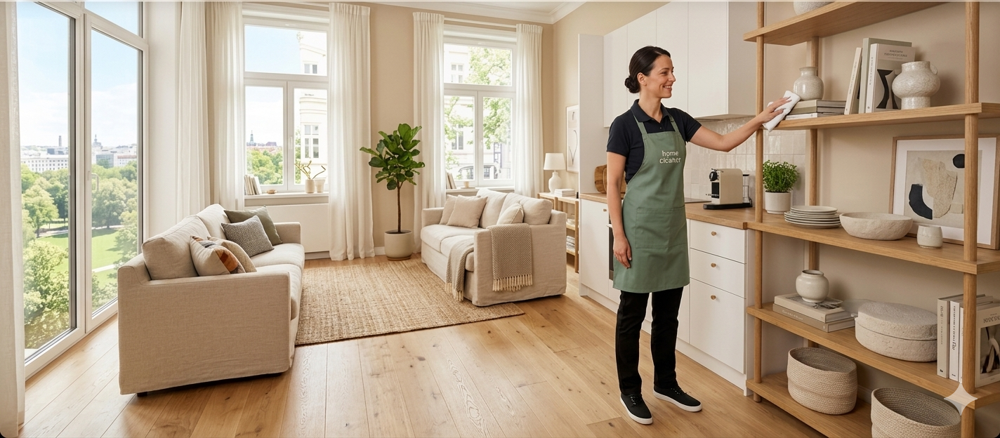
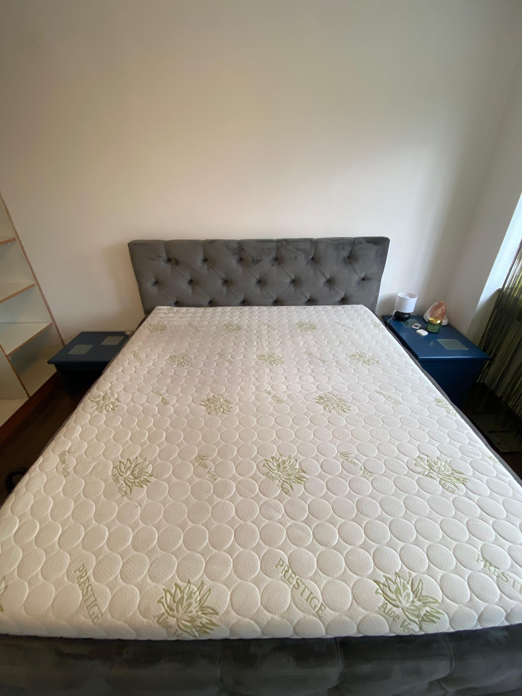
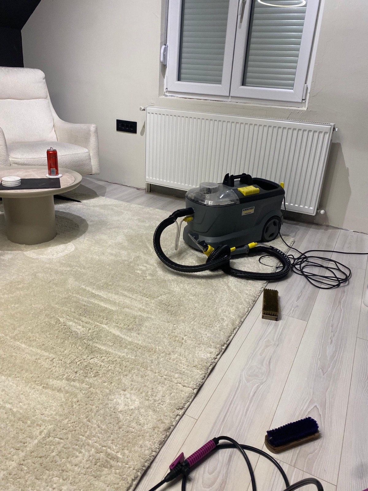

Čišćenje stanova
Redovno i detaljno čišćenje doma
Za stanove i kuće kojima je potreban uredan, osvežen i reprezentativan izgled bez opterećenja za vlasnike.

Od redovnog održavanja do detaljnog sređivanja prostora koji mora da izgleda spremno odmah.
Za stanove i kuće kojima je potreban uredan, osvežen i reprezentativan izgled bez opterećenja za vlasnike.

Kuhinje, kupatila, detalji, osvetljene površine i zone koje najviše utiču na utisak čistoće dobijaju posebnu pažnju.

Za kancelarije, salone i manje poslovne enterijere koji treba da ostave ozbiljan i uredan prvi utisak.

Kada je potreban jači završni tretman i prostor mora da izgleda spremno za useljenje, korišćenje ili prezentaciju.
Bez suvišnih obećanja i bez haotičnog rada u prostoru.
Pre dolaska definišemo obim rada, očekivanja i termin koji vam odgovara.
Radimo organizovano i tiho, bez nepotrebnog opterećenja za klijenta i njegov prostor.
Prostor posle tretmana deluje urednije, mirnije i spremno za boravak ili rad.
Na početnoj izdvajamo jedno jasno poređenje, a ostale radove možete otvoriti posebno.

Prostor deluje teže, zasićeno i bez jasne završnice.

Posle tretmana utisak je mirniji, svetliji i spreman za boravak ili rad.
Ovo su stvari koje klijenti najčešće izdvoje odmah po završetku rada.
“Stan je izgledao rasterećeno i sveže već istog trenutka kada smo ušli. Najviše nam je značilo što je ceo proces bio miran i potpuno jasan.”
Milica, centar Kragujevca“Tražili smo tim za čišćenje kancelarije koji radi diskretno i precizno. MS Sjaj je ispunio baš to, bez ometanja svakodnevnog rada.”
Nikola, vlasnik kancelarije“Posle dubinskog tretmana prostor nije bio samo čist, već je delovao kao da je kompletno podignut na viši nivo urednosti.”
Jelena, porodični domPošaljete upit ili nas pozovete, a mi definišemo tip prostora, obim rada, termin i očekivani rezultat pre dolaska tima.
Da. Dubinsko čišćenje radimo za stanove, kuće, kuhinje, kupatila, detaljne kontaktne zone i zahtevnije završne tretmane.
Da. Čišćenje kancelarija i manjih poslovnih prostora organizujemo tako da ne remeti rad tima i svakodnevni ritam firme.
Moguće je. Nakon prvog angažmana možemo definisati ritam održavanja koji odgovara vašem prostoru i obavezama.
Logoi partnera služe kao potvrda poverenja, kontinuiteta i profesionalnog pristupa.
Ostavite osnovne podatke o prostoru, a mi ćemo poslati jasan predlog usluge i termin koji se uklapa u vaš raspored.